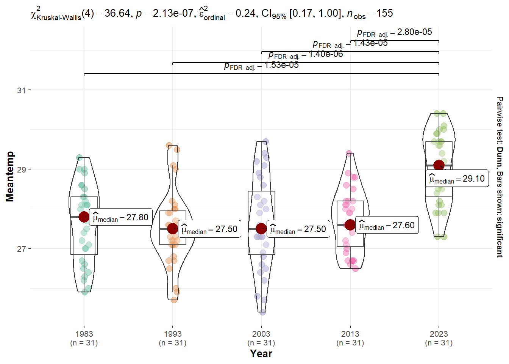

pacman::p_load(tidyverse, ggridges, ggthemes, tidyverse, patchwork, ggiraph, colorspace, ggstatsplot)Take-home Exercise 3
Be Weatherwise or Otherwise
1 Overview
According to an office report as shown in the infographic below, daily mean temperature are projected to increase by 1.4 to 4.6. The objective of this exercise is to apply newly acquired visual interactivity and visualising uncertainty methods to validate the claim made in the report.

Following steps will be used to achieve the objective:
- Select a weather station and download historical daily temperature data from Meteorological Service Singapore website,
- Select daily temperature records of a month of the year 1983, 1993, 2003, 2013 and 2023 and create an analytics-driven data visualisation,
- Apply appropriate interactive techniques to enhance the user experience in data discovery and/or visual story-telling.
2 Data preparation
2.1 Loading R packages
First, the following code chunk is used to load required R packages into our working environment:
2.2 Importing the data
The code chunk below uses read_csv() of readr to import weather data into our working environment. For the purpose of this exercise, we choose October weather data from Changi station.
combined <- read_csv(c("data/DAILYDATA_S24_198310.csv",
"data/DAILYDATA_S24_199310.csv",
"data/DAILYDATA_S24_200310.csv",
"data/DAILYDATA_S24_201310.csv",
"data/DAILYDATA_S24_202310.csv"),
col_select =c(2, 3, 4, 9, 10, 11)) Rows: 155 Columns: 6
── Column specification ────────────────────────────────────────────────────────
Delimiter: ","
dbl (6): Year, Month, Day, Mean Temperature (°C), Maximum Temperature (°C), ...
ℹ Use `spec()` to retrieve the full column specification for this data.
ℹ Specify the column types or set `show_col_types = FALSE` to quiet this message.3 Data Wraggling
our analysis commenced with the inspection of the imported data table.
Code
combined# A tibble: 155 × 6
Year Month Day `Mean Temperature (°C)` `Maximum Temperature (°C)`
<dbl> <dbl> <dbl> <dbl> <dbl>
1 1983 10 1 26 27.8
2 1983 10 2 28.3 32.1
3 1983 10 3 28.1 31
4 1983 10 4 29 32.2
5 1983 10 5 29 32.4
6 1983 10 6 28 31.5
7 1983 10 7 26.3 31.3
8 1983 10 8 27.7 32.4
9 1983 10 9 28.5 32.9
10 1983 10 10 28.6 33.3
# ℹ 145 more rows
# ℹ 1 more variable: `Minimum Temperature (°C)` <dbl>After examining the data table, the data preparation issues and the corresponding actions are documented in the table below:
| Data preparation issue | Action |
|---|---|
| Inappropriate column types | Convert “Year”, “Month” and “Day” to factor using as.factor() |
| Column names with spaces | Remove spaces from column names using rename() |
| Derivation of new column | Derive the differences between Maxtemp and Mintemp |
Code
combined_data <- combined %>%
mutate(Year = as.factor(Year),
Month = as.factor(Month),
Day = as.factor(Day)) %>%
rename("Meantemp" = "Mean Temperature (°C)",
"Maxtemp" = "Maximum Temperature (°C)",
"Mintemp" = "Minimum Temperature (°C)") %>%
mutate(Difference = Maxtemp - Mintemp)Before we proceed to visualization task, we use head() function to preview the processed data set.
Code
head(combined_data)# A tibble: 6 × 7
Year Month Day Meantemp Maxtemp Mintemp Difference
<fct> <fct> <fct> <dbl> <dbl> <dbl> <dbl>
1 1983 10 1 26 27.8 25 2.8
2 1983 10 2 28.3 32.1 24.6 7.5
3 1983 10 3 28.1 31 26.3 4.7
4 1983 10 4 29 32.2 26 6.2
5 1983 10 5 29 32.4 27.2 5.2
6 1983 10 6 28 31.5 24.5 7 We noted that the data is recorded in daily interval. The following code is used to derive the average mean, maximum and minimum temperature of the month, which will be used in subsequent analysis.
Code
ave_temp_by_year <- combined_data %>%
group_by(Year) %>%
summarize(ave_meantemp = round(mean(Meantemp),2),
ave_mintemp = round(mean(Mintemp),2),
ave_maxtemp = round(mean(Maxtemp),2),
se = round(sd(Meantemp),2))
ave_temp_by_year # A tibble: 5 × 5
Year ave_meantemp ave_mintemp ave_maxtemp se
<fct> <dbl> <dbl> <dbl> <dbl>
1 1983 27.6 24.7 31.5 0.98
2 1993 27.5 24.7 31.6 0.94
3 2003 27.6 24.6 31.1 1.15
4 2013 27.7 24.6 31.4 0.78
5 2023 29.0 26.2 33.3 0.914 Data visualization
The graph illustrates the annual variation in temperature, focusing on the mean temperature, maximum temperature, and minimum temperature over the years. Each point on the graph represents the average mean temperature for a specific year, accompanied by a blue shaded region indicating the 95% confidence interval. The grey ribbon surrounding the mean temperature point shows the range between the average minimum and maximum temperatures.
As user hovers over each data point, a tooltip displays detailed information for that particular year, providing insights into the average mean temperature, average maximum temperature, average minimum temperature, and the associated 95% confidence interval.
Code
# customise tooltip content
ave_temp_by_year$tooltip <- c(paste0("Year: ", ave_temp_by_year$Year,
"\nAve mean temp: ", ave_temp_by_year$ave_meantemp, "°C",
"\nAve min temp: ", ave_temp_by_year$ave_mintemp, "°C",
"\nAve max temp: ", ave_temp_by_year$ave_maxtemp, "°C",
"\n95% CI: [", ave_temp_by_year$ave_meantemp - 1.96 * ave_temp_by_year$se, ", ", ave_temp_by_year$ave_meantemp + 1.96 * ave_temp_by_year$se, "]"))
# customise tooltip css
tooltip_css <-
"background-color: white;
color: black;
font-family: 'Poppins', sans-serif;
border: 1px dashed #3F3E3C;
font-size: 14px;
padding: 5px;";
p <- ggplot(ave_temp_by_year, aes(x = Year)) +
# Plot min to max temp
geom_ribbon(
aes(x = Year,
ymin = ave_mintemp,
ymax = ave_maxtemp,
group = 1),
alpha = 0.4,
fill="grey80") +
# Plot 95% confidence interval of mean
geom_ribbon(
aes(x = Year,
ymin = ave_meantemp-1.96*se,
ymax = ave_meantemp+1.96*se,
group = 1),
alpha = 0.4,
fill="lightblue") +
# Plot point for mean
geom_point_interactive(aes(y = ave_meantemp,tooltip = ave_temp_by_year$tooltip),
color = "black") +
# plot mean line
geom_line(aes(x = Year,
y = ave_meantemp,
group = 1),
color = "black",
size = 0.8,
alpha = 0.6) +
labs(title = "Analyzing Temperature Patterns Over the Decades (1983-2023)",
y = "Temperature (°C)") +
coord_cartesian(ylim = c(20, 40))+
theme_minimal()
girafe(
ggobj = p,
width_svg = 6,
height_svg = 6*0.618,
options = list(
opts_tooltip(
css = tooltip_css))
) The figure above shows a consistent daily mean temperature from 1983 to 2013, followed by an increase from 2013 to 2023. To validate these observed temperature trends, we move on to confirmatory data analysis.
5 Confirmatory data analysis
Our visualization from the previous section shows a consistent daily mean temperature from 1983 to 2013, followed by an increase from 2013 to 2023. To validate these observed temperature trends, we move on to confirmatory data analysis.
A normality assumption test is first conducted for mean temperature accross different years. Using confidence level of 95%, we test the following hypothesis:
H0: The observed distribution resembles normal distribution.
H1: The observed distribution failed to resemble normal distribution.
5.1 Distribution
Figure below are ridgelines plots showing the distribution of temperature across different years.
Code
d_mean <- ggplot(combined_data,
aes(x = Meantemp,
y = Year)) +
geom_density_ridges(
scale = 1.5,
rel_min_height = 0.01,
fill = lighten("tan", .3),
color = "snow",
alpha = 0.6) +
scale_x_continuous(expand = c(0, 0)) +
scale_y_discrete(name = NULL, expand = expansion(add = c(0.2, 2.6))) +
theme_ridges() +
labs(title = "Mean") +
theme(axis.title.x = element_blank(),
axis.title.y = element_blank(),
plot.title=element_text(size= 12, hjust= 0.5),
axis.text = element_text(size= 10))
d_min <- ggplot(combined_data,
aes(x = Mintemp,
y = Year)) +
geom_density_ridges(
scale = 1.5,
rel_min_height = 0.01,
fill = lighten("tan", .3),
color = "snow",
alpha = 0.6) +
scale_x_continuous(
name = "Temperature",
expand = c(0, 0)) +
scale_y_discrete(name = NULL, expand = expansion(add = c(0.2, 2.6))) +
theme_ridges() +
labs(title = "Min") +
theme(axis.title.y = element_blank(),
axis.text.y = element_blank(),
plot.title=element_text(size= 12, hjust= 0.5),
axis.text = element_text(size= 10),
axis.title.x = element_text(size= 11))
d_max <-ggplot(combined_data,
aes(x = Maxtemp,
y = Year)) +
geom_density_ridges(
scale = 1.5,
rel_min_height = 0.01,
fill = lighten("tan", .3),
color = "snow",
alpha = 0.6) +
scale_x_continuous(expand = c(0, 0)) +
scale_y_discrete(name = NULL, expand = expansion(add = c(0.2, 2.6))) +
theme_ridges() +
labs(title = "Max") +
theme(axis.title.x = element_blank(),
axis.title.y = element_blank(),
axis.text.y = element_blank(),
plot.title=element_text(size= 12, hjust= 0.5),
axis.text = element_text(size= 10))
d_mean + d_min + d_maxCode
ggplot(combined_data,
aes(x = Meantemp,
y = Year)) +
geom_density_ridges(
scale = 1.5,
rel_min_height = 0.01,
fill = lighten("tan", .3),
color = "snow",
alpha = 0.6) +
scale_x_continuous(expand = c(0, 0)) +
theme_ridges() +
labs(title = "Distribution of October daily mean temperature across different years",
x = "Mean Temperature (°C)") +
theme(axis.title.x=element_text(size= 10.5, hjust= 0.5),
axis.title.y = element_blank(),
plot.title=element_text(size= 13, hjust= 0.5),
axis.text = element_text(size= 9)) Code
ggplot(combined_data,
aes(x = Mintemp,
y = Year)) +
geom_density_ridges(
scale = 1.5,
rel_min_height = 0.01,
fill = lighten("tan", .5),
color = "snow",
alpha = 0.6) +
scale_x_continuous(expand = c(0, 0)) +
theme_ridges() +
labs(title = "Distribution of October daily minimum temperature across different years",
x = "Min Temperature (°C)") +
theme(axis.title.x=element_text(size= 10.5, hjust= 0.5),
axis.title.y = element_blank(),
plot.title=element_text(size= 13, hjust= 0.5),
axis.text = element_text(size= 9)) Code
ggplot(combined_data,
aes(x = Maxtemp,
y = Year)) +
geom_density_ridges(
scale = 1.5,
rel_min_height = 0.01,
fill = lighten("tan", .7),
color = "snow",
alpha = 0.6) +
scale_x_continuous(expand = c(0, 0)) +
theme_ridges() +
labs(title = "Distribution of October daily maximum temperature across different years",
x = "Max Temperature (°C)") +
theme(axis.title.x=element_text(size= 10.5, hjust= 0.5),
axis.title.y = element_blank(),
plot.title=element_text(size= 13, hjust= 0.5),
axis.text = element_text(size= 9)) The ridgeline plot visually indicates a normal distribution; however, to validate this observation, we performed a Shapiro-Wilk test.
5.2 Shapiro-Wilk Test
Code
# Assuming your dataset is named 'data'
shapiro_results <- combined_data %>%
group_by(Year) %>%
summarise(Mean_p_value = shapiro.test(Meantemp)$p.value,
Min_p_value = shapiro.test(Mintemp)$p.value,
Max_p_value = shapiro.test(Maxtemp)$p.value,)
knitr::kable(shapiro_results, format = 'html')| Year | Mean_p_value | Min_p_value | Max_p_value |
|---|---|---|---|
| 1983 | 0.2334118 | 0.2551016 | 0.0128211 |
| 1993 | 0.2532922 | 0.3819273 | 0.0001435 |
| 2003 | 0.6588778 | 0.1515869 | 0.0006685 |
| 2013 | 0.2972025 | 0.1924884 | 0.2279875 |
| 2023 | 0.0957024 | 0.0670380 | 0.0001276 |
The table above shows at least one result from Shapiro-Wilk test yields p-value of lesser than significant level 0.05, we conclude that the sample failed to confirm normality. Therefore, we use non-parametric test in the subsequent analysis.
5.3 ANOVA
A non-parametric Kruskal-Wallis Test is conducted to determine if there is any significant difference in average daily mean, mininum, maximum temperature across different years. The following hypothesis are used in the respective test:
Mean
H0 : Average of daily mean temperature across different years are equal
H1 : Average of daily mean temperature across different years are not equal
Minimum
H0 : Average of daily minimum temperature across different years are equal
H1 : Average of daily minimum temperature across different years are not equal
Maximum
H0 : Average of daily maximum temperature across different years are equal
H1 : Average of daily maximum temperature across different years are not equal
Code
ggbetweenstats(
data = combined_data,
x = Year,
y = Meantemp,
type = "np",
mean.ci = TRUE,
pairwise.comparisons = TRUE,
pairwise.display = "s",
p.adjust.method = "fdr",
messages = FALSE,
)
Code
ggbetweenstats(
data = combined_data,
x = Year,
y = Mintemp,
type = "np",
mean.ci = TRUE,
pairwise.comparisons = TRUE,
pairwise.display = "s",
p.adjust.method = "fdr",
messages = FALSE
)Code
ggbetweenstats(
data = combined_data,
x = Year,
y = Maxtemp,
type = "np",
mean.ci = TRUE,
pairwise.comparisons = TRUE,
pairwise.display = "s",
p.adjust.method = "fdr",
messages = FALSE
)As the p value is consistently < significant level of 0.05, we conclude that there is significant difference in average daily mean, minimum and maximum temperature across different years.
Upon close examination through pairwise comparison, we noted that there is no significant difference between 1983 to 2013. However, for year 2023, there is a significant increase in daily temperature as compared to 2013.
It is important to note that while the difference between 2013 and 2023 is statistically significant, the actual temperature difference falls within 1.5°C to 1.7°C. This gradual increase aligns with the broader claim of projected temperature rise.
6 Conclusion
Nevertheless, due to the limitation of this analysis, we are unable to provide a conclusive answer regarding the future projection increment of temperatures by 1.4°C to 4.6°C. The absence of projected data hinders our ability to forecast with certainty.
In summary, our exploration of historical temperature trends provides valuable insights, but the missing piece of future projections leaves us with an incomplete picture. Further research with additional data is essential for a comprehensive understanding of future temperature trends.